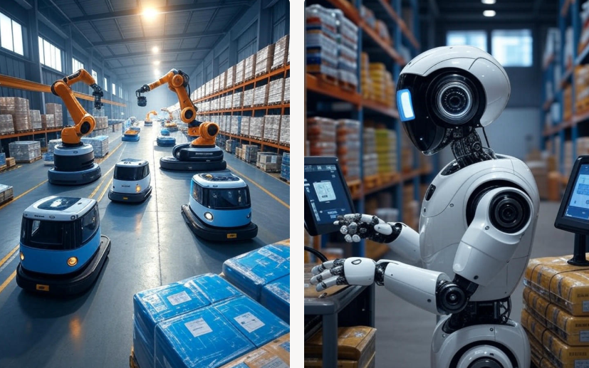

О проекте LogisticAI
LogisticAI — это инновационная AI-платформа, разработанная для автоматизации процессов в логистике. Мы стремимся оптимизировать маршруты доставки, улучшить управление ресурсами и снизить затраты для бизнеса. Используя передовые технологии искусственного интеллекта (AI), мы предоставляем компании инструменты для прогнозирования спроса, управления автопарком и повышения качества обслуживания клиентов. Наша уникальная ценность заключается в оптимизации "последней мили", снижении времени доставки и предоставлении предиктивной аналитики для прогнозирования загруженности дорог и автоматизации процессов.
Целевая аудитория
Мы ориентируемся на компании, которые сталкиваются с высокими затратами и сложностями в логистике. LogisticAI помогает оптимизировать процессы для следующих групп:
- B2B-операторы: Автоматизация цепочек поставок для более эффективного взаимодействия между партнерами.
- Онлайн-ритейлеры с региональной доставкой: Снижение времени доставки и улучшение клиентского опыта за счет точных ETA (ожидаемого времени прибытия).
- Производственные компании с частой поставкой сырья: Прогнозирование потребностей в сырье и минимизация простоев.
- Логистические компании (средний бизнес): Оптимизация маршрутов и снижение операционных затрат.
Отрасль
Проект LogisticAI работает на стыке двух ключевых отраслей: транспорта и логистики, а также технологий искусственного интеллекта (AI). Логистическая отрасль сталкивается с растущими вызовами: увеличение числа IoT-устройств (по прогнозам, к 2025 году их будет 75 млрд), что повышает риски кибератак, необходимость перехода на экологичные решения, такие как электротранспорт, и высокая конкуренция. Мы используем AI для анализа данных в реальном времени, прогнозирования спроса и оптимизации маршрутов, чтобы сделать логистику более эффективной, устойчивой и безопасной.
Выбранные проблемы
На основе анализа отрасли мы выделили ключевые проблемы, которые мешают развитию логистики. LogisticAI предлагает решения для каждой из них, используя AI и IoT для автоматизации процессов, повышения безопасности и минимизации экологического воздействия.
| Проблема | Описание | Решение LogisticAI |
|---|---|---|
| Сложности перехода на электротранспорт | Высокая стоимость, управление парком, интеграция данных о зарядке. | Аналитика для управления парком и интеграция с системами зарядки. |
| Деградация экосистем | Минимизация воздействия, баланс эффективности. | Оптимизация маршрутов для снижения выбросов и использования ресурсов. |
| Таможенные барьеры | Автоматизация документооборота. | AI-алгоритмы для автоматической обработки документов. |
| Социальная ответственность | Безопасность перевозок, условия труда. | Мониторинг безопасности и автоматизация для снижения нагрузки на сотрудников. |
| Медленное внедрение AI/IoT | Сопротивление, совместимость, кибербезопасность. | Простая интеграция с существующими системами и усиленная защита данных. |
SWOT-анализ
| S - Сильные стороны (Strengths): | W - Слабые стороны (Weaknesses): |
|---|---|
| · Оптимизация процессов | · Высокая стоимость внедрения |
| · Улучшение отслеживания грузов | · Завистимость от технологий |
| · Прогнозирование и аналитика | · Недостаток квалифицированных кадров |
| · Снижение затрат | · Проблемы с совместимостью |
| · Повышение качества обслуживания | · Риски кибербезопасности |
| O - Возможности (Opportunities): | T - Угрозы (Threats): |
| · Развитие автономных транспортных средств | · Киберугрозы |
| · Умные склады | · Регуляторные ограничения |
| · Глобальная оптимизация цепочек поставок | · Конкуренция |
| · Устойчивое развитие | · Технологическая зависимость |
| · Рост рынка | · Этические вопросы |